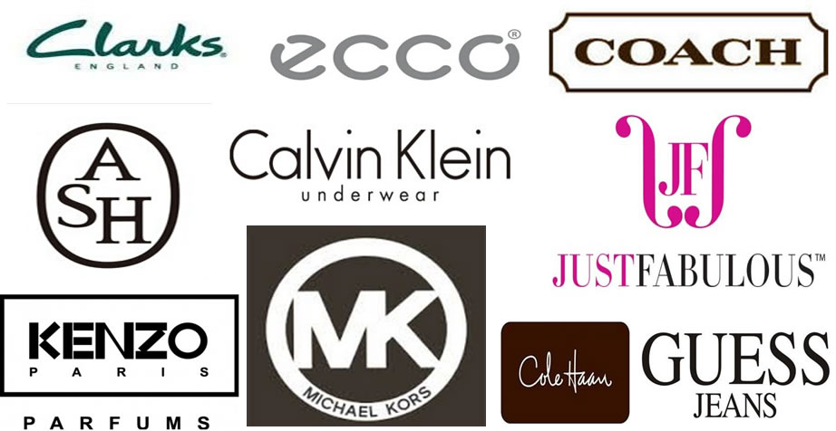

We are nominated by packaging and printing company as an authorized representative of overseas markets, and had been sucessfully picked up as brand supplier for Clarks, Ecco, ASH, CK, Coach, KENZO, MK, JF and so on. The Logo as following.
Currently, Our agent products include four kinds of commodities:
- Wrapping Tissue Paper
- Silk Paper
- Label Stickers
- Hang Tag
1. Wrapping Tissue Paper
Printed Wrapping Paper sheets, our best seller, and 1st priority of our company. We are proud of our products and service and can always satisfy our customers by an affordable price. Our capacity for this kind of products is 120,000,000 pcs per year. The standard dimension is 0.889 metre by 1.194 meter, printed colors as 1-6 colors, available with very short lead time; we also can help our customers for finishing.
We can also meet our customers’ requirements LOGO printed to the traditional packaging in shoes. Our average year capacity for this kind of products is 80,000,000 sheets
2. Tissue Paper
2.1 For clothes and shoes packaging